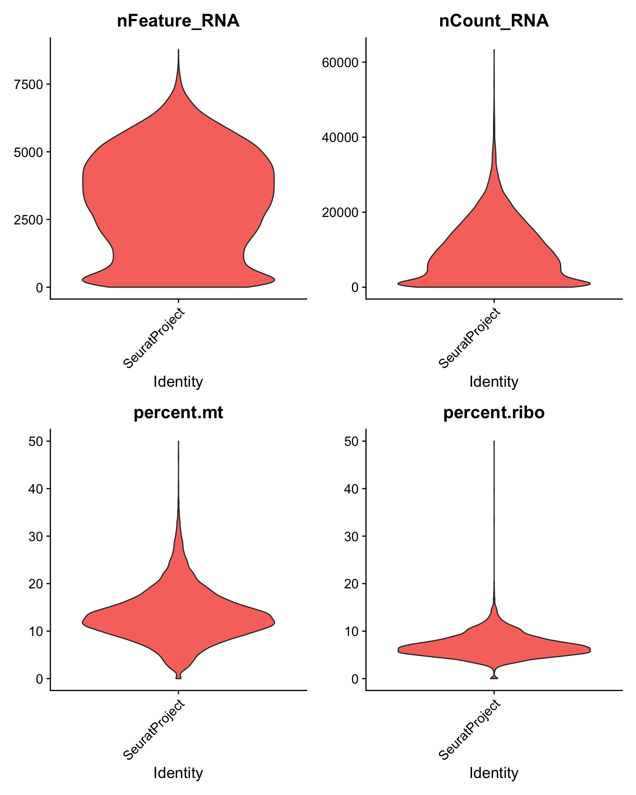

Practice RR-10 Flight Hippocampus
#Pre-processing of the RR-10 samples: focus on FL hippocampus samples
Set paths
Create infoTable and create Seurat object
Using spotfiles to remove spots outside of tissue
Loading /Users/solenefrapard/Documents/RRRM2_RR10_NASA_Project2/DataProcessing/RRRM2_RR10_test/RR-10/FL_Hippo/FL1_H/filtered_feature_bc_matrix.h5 count matrix from a 'Visium' experiment
Loading /Users/solenefrapard/Documents/RRRM2_RR10_NASA_Project2/DataProcessing/RRRM2_RR10_test/RR-10/FL_Hippo/FL3_H/filtered_feature_bc_matrix.h5 count matrix from a 'Visium' experiment
Loading /Users/solenefrapard/Documents/RRRM2_RR10_NASA_Project2/DataProcessing/RRRM2_RR10_test/RR-10/FL_Hippo/FL5_H/filtered_feature_bc_matrix.h5 count matrix from a 'Visium' experiment
Loading /Users/solenefrapard/Documents/RRRM2_RR10_NASA_Project2/DataProcessing/RRRM2_RR10_test/RR-10/FL_Hippo/FL7_H/filtered_feature_bc_matrix.h5 count matrix from a 'Visium' experiment
Loading /Users/solenefrapard/Documents/RRRM2_RR10_NASA_Project2/DataProcessing/RRRM2_RR10_test/RR-10/FL_Hippo/FL9_H/filtered_feature_bc_matrix.h5 count matrix from a 'Visium' experiment
------------- Filtering (not including images based filtering) --------------
Spots removed: 2
Genes removed: 17777
Saving capture area ranges to Staffli object
After filtering the dimensions of the experiment is: [14508 genes, 14081 spots] Data Quality Control
We can try to plot different features, for example, the number of genes per spot for the filtered data.
Number of Genes per Spot
The Vln function allow use to draws a violin plot of single cell data.
To explore the spatial distribution of various features on the array coordinates we can do this using the ST.FeaturePlot() function. Features include any column stored in the “meta.data” slot, dimensionality reduction objects or gene expression vectors.
VlnPlot - UMI/Genes/mtGenes/RiboGenes
Now, let’s plot some other features. We want to evaluate the percentage of ribosomal and mitochondrial genes in order to filter them out.

Filtering step
We import the reference mouse genome. apply() takes Data frame or matrix as an input and gives output in vector, list or array. Apply function in R is primarily used to avoid explicit uses of loop constructs. It is the most basic of all collections can be used over a matrix.–> Can allow use for example to calculate a mean on all the row of a data frame but not the columns. character() function in R converts a numeric object to a string data type or a character object. So I think that apply(enids, 2, as.character) is converting the column of the reference mouse genome dataframe in string.
mitochondrial, ribosomal genes and Malat1 filtered out
Why did they wanted to filter the Malat1 out as well?
Warning in SingleExIPlot(type = type, data = data[, x, drop = FALSE], idents =
idents, : All cells have the same value of percent.mt.Warning in SingleExIPlot(type = type, data = data[, x, drop = FALSE], idents =
idents, : All cells have the same value of percent.ribo.